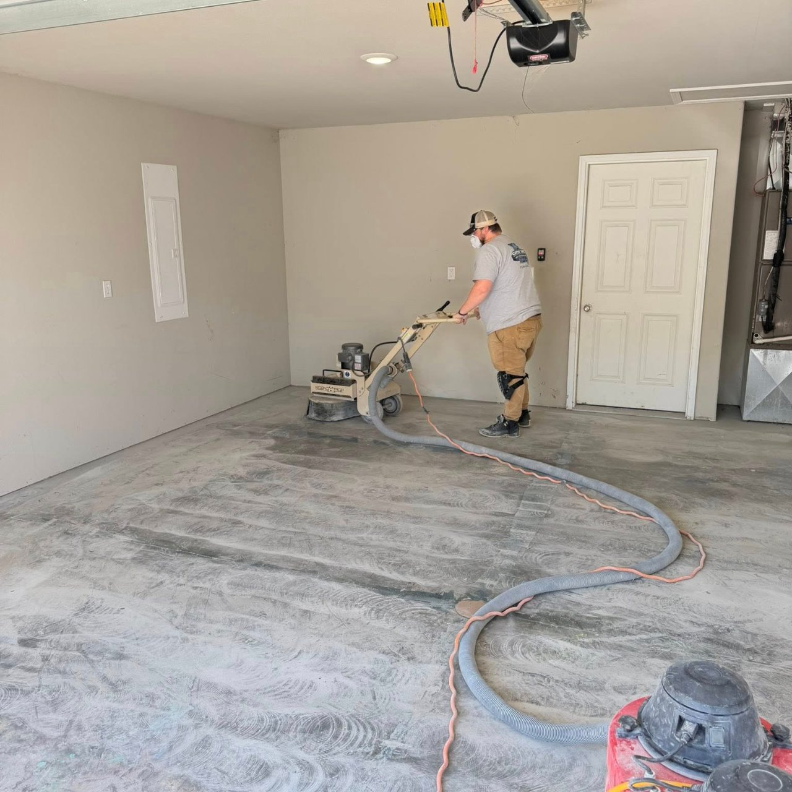
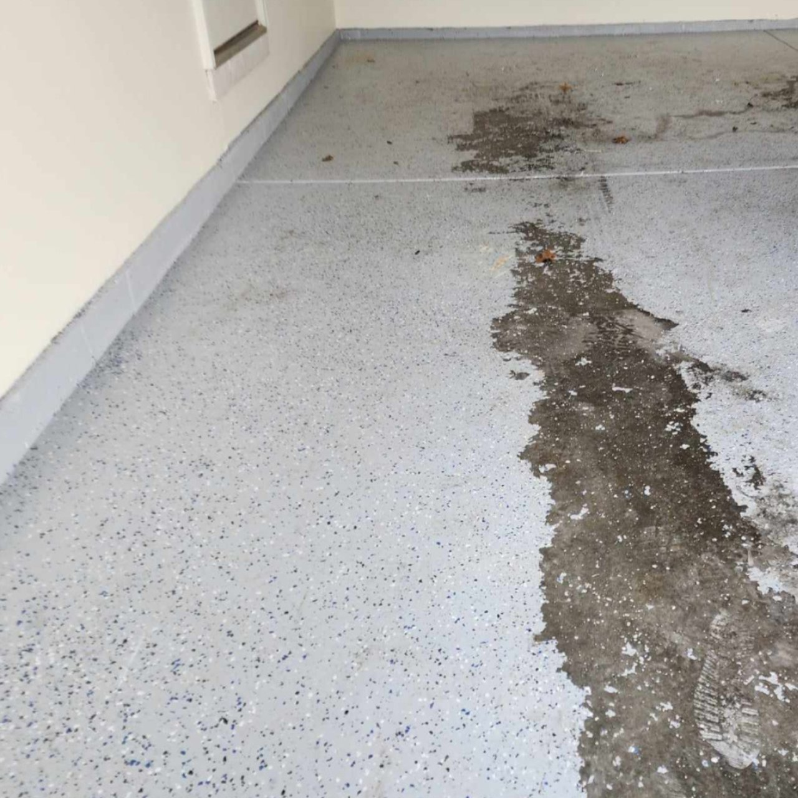
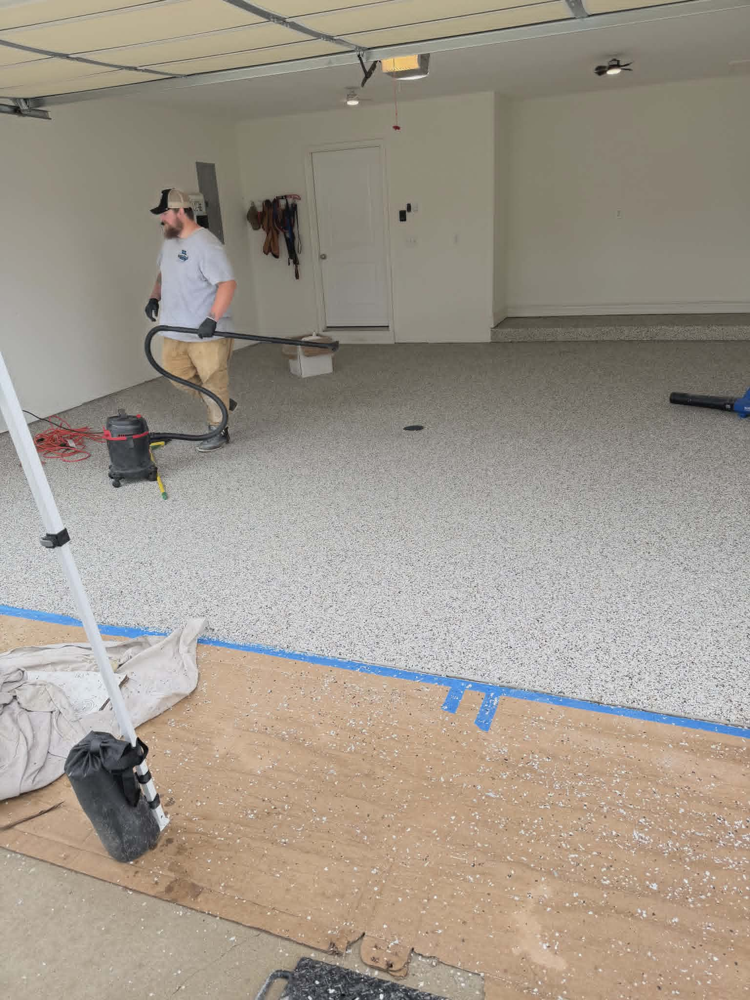

Do You Need to Grind Concrete Before Applying Epoxy?

The short answer is yes. If you want an epoxy or polyaspartic garage floor that lasts for years instead of months, the concrete should be mechanically ground before the coating is applied. It's the single question we get asked more than almost any other: do you need to grind concrete before epoxy? At Show Me Epoxy, our answer is always the same — every floor gets ground, no exceptions.
In fact, proper surface preparation is the single most important part of any concrete floor coating installation. Many coating failures aren't caused by bad materials. They're caused by bad preparation, and diamond grinding for epoxy is the step that gets skipped most often.
Why Concrete Needs to Be Prepared
Concrete may look smooth, but under a microscope it's full of tiny pores. Over the years, those pores fill up with:
- Dirt and dust
- Oil and grease
- Tire residue
- Sealers
- Paint
- Previous coatings
If a coating is applied over those contaminants, it bonds to the dirt instead of the concrete. Eventually the coating begins to peel, chip, or delaminate. That's why epoxy surface preparation matters so much — it's not an optional add-on, it's the foundation the entire system depends on.
What Does Diamond Grinding Actually Do?
Professional concrete preparation for epoxy uses industrial diamond grinders to remove the top layer of the slab and create the ideal surface profile for the coating to bond to. Garage floor grinding accomplishes several things at once:
- Opens the concrete pores
- Removes surface contamination
- Eliminates weak, damaged concrete
- Removes old sealers and coatings
- Levels minor imperfections
- Creates a mechanical bond for the coating
Instead of simply sitting on top of the floor, the coating becomes permanently anchored to the concrete underneath. For a look at what this process actually looks like on a real job site, see our behind-the-scenes breakdown of why diamond grinding matters.
What Is a CSP Profile?
Professional installers often talk about creating a Concrete Surface Profile (CSP). Think of it like sanding wood before painting — you need enough texture for the finish to grip, but not so much that the surface looks rough.
Most high-performance garage floor systems require a CSP of approximately 2–3, roughly comparable to medium-grit sandpaper. Without that profile, even the best coating products on the market can fail prematurely, no matter how carefully they're applied.
Diamond Grinding vs. Acid Etching vs. No Preparation
Many DIY epoxy kits recommend acid etching instead of grinding, and some contractors skip preparation altogether to save time. Here's how the three approaches actually compare:
| Preparation Method | What It Removes | Bond Strength | Typical Lifespan |
|---|---|---|---|
| Diamond Grinding | Contaminants, old sealers, weak concrete, old coatings | Mechanical bond — strongest | 10–20+ years |
| Acid Etching | Light surface residue only; inconsistent results | Chemical bond — moderate at best | 1–3 years |
| No Preparation | Nothing — coating applied directly over existing surface | Little to no bond | Months to 1 year |
While acid etching can lightly clean concrete, it doesn't remove oil contamination, existing sealers, paint, previous coatings, weak concrete, or surface imperfections. Acid also creates inconsistent results because every concrete slab reacts differently to the chemical. Professional installers rarely rely on acid etching for high-performance coating systems — mechanical grinding is far more reliable and produces a much stronger bond.
What Happens If You Skip Grinding?
Skipping proper preparation can lead to peeling coatings, hot tire pickup, bubbling, flaking, and delamination. These problems often show up within the first year because the coating never bonded correctly to the concrete in the first place.

A coating applied without proper prep — the epoxy never bonded to the concrete, so it began lifting within months.
Unfortunately, once a floor begins failing this way, the only real fix is to grind everything off and start over — which usually costs more than doing it right the first time would have.
Can Every Garage Floor Be Ground?
Almost every residential garage floor can be mechanically ground. Garage floor grinding works on:
- New concrete (after proper curing)
- Older concrete
- Previously coated concrete
- Concrete with minor cracks
- Concrete with surface wear
- Garage floors with cosmetic damage
During preparation, installers also repair cracks, pits, and other imperfections before applying the coating. If you're wondering whether your specific slab qualifies, we cover this in more detail in our guide to coating epoxy over existing concrete.
What Equipment Do Professionals Use?
Professional installers use industrial diamond grinders that weigh hundreds of pounds. These machines:
- Produce a consistent surface profile across the whole floor
- Remove weak concrete evenly
- Connect to HEPA dust collection systems
- Prepare large areas quickly and accurately
This is very different from using a handheld grinder or a small rented floor buffer. Professional-grade equipment produces a much more uniform finish and better long-term performance across an entire two- or three-car garage.

HEPA dust collection keeps the workspace clean and ensures a properly bonded finish.
Does Grinding Damage the Concrete?
No. Grinding removes only a thin layer from the surface — it doesn't weaken the slab. Instead, it removes weak material so the new coating bonds to the stronger concrete underneath. The result is a longer-lasting floor that's more resistant to peeling and wear, not a compromised one.
Why Professional Preparation Makes the Difference
When homeowners compare coating companies, they often focus on price first. A better question to ask is: "How are you preparing my concrete?"
Professional epoxy surface preparation includes:
- Mechanical diamond grinding
- Crack repair
- Surface repairs
- Dust removal
- Moisture inspection
- Proper coating application
The coating itself is only as good as the surface beneath it. A contractor who takes shortcuts on prep is setting the floor up to fail, regardless of how good the epoxy or polyaspartic product is.
"Called three companies. Show Me Epoxy was the only one that mentioned diamond grinding before I asked. That's how I knew they were the real deal." — Robert K., Lake of the Ozarks, MO
The Bottom Line
If you want a garage floor coating that looks great and lasts for years, concrete grinding isn't optional — it's essential. Whether your floor is brand new or decades old, proper preparation creates the foundation for a durable, long-lasting finish.
Choosing a contractor who takes preparation seriously, whether you're in Columbia or anywhere else across Mid-Missouri, is one of the best investments you can make in your garage floor.
Frequently Asked Questions
Do you have to grind concrete before applying epoxy?
Yes, for a coating that's meant to last. Mechanical diamond grinding opens the pores of the concrete, removes contamination and weak surface material, and creates the surface profile epoxy needs to permanently bond. Without it, the coating sits on top of the slab instead of anchoring into it, and it's far more likely to peel.
Is acid etching enough to prepare concrete for epoxy?
Acid etching can lightly clean a surface, but it doesn't remove oil contamination, old sealers, paint, previous coatings, or weak concrete the way mechanical grinding does. Etching results are also inconsistent because every slab reacts differently to the acid. Professional installers rarely rely on it for high-performance coating systems.
What is a CSP profile and why does it matter?
CSP stands for Concrete Surface Profile — a standardized scale that measures how rough or textured a ground concrete surface is. Most high-performance garage floor coatings require a CSP of about 2 to 3, similar to medium-grit sandpaper. Without the correct profile, even premium coating products can fail prematurely.
What happens if you skip grinding before an epoxy install?
Skipping proper preparation can lead to peeling, bubbling, flaking, hot tire pickup, and delamination — often within the first year, because the coating never mechanically bonded to the concrete. Once a floor starts failing this way, the only real fix is to grind everything off and start over.
Can every garage floor be diamond ground?
Almost every residential garage floor can be mechanically ground, including new concrete after it has cured, older concrete, previously coated concrete, and floors with minor cracks or cosmetic wear. Cracks, pits, and other imperfections are typically repaired during the same preparation process, before the coating is applied.
Get a Free Garage Floor Evaluation
Not sure if your concrete is ready for a new coating? Our team can inspect your floor, explain any garage floor coatings preparation that may be needed, and provide a free estimate with no obligation.
Use our Instant Price Calculator or contact us today to learn how a professionally prepared concrete floor can be transformed in as little as one day.
Related Articles
Ready for a Floor That Actually Lasts?
Get a free, no-pressure quote. We'll walk you through exactly what your concrete needs — including whether it requires extra prep.
Get My Free Quote →